－久郷ポンナレット－
－久郷ポンナレット－
|
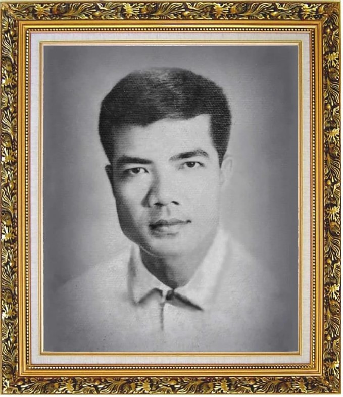
「唯一の父の写真」 幼い頃「パパそっくりね」と言われるのがとても嬉しかったです |
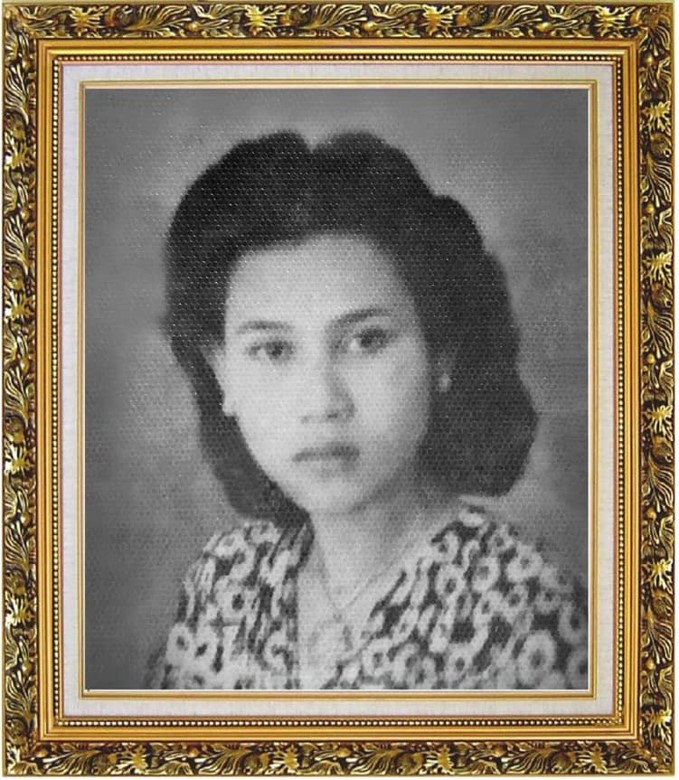
「若き日の母」 |
|
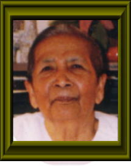
大好きなニーおばあちゃま 身寄りの無い私達きょうだいの未来を心配して、 命がけで共に国境を越えて下さいました。 私たちは日本へ。そしておばあちゃまは、息子 さんとアメリカへ渡りました。 結局一度も再会出来ないまま、ニーおばあちゃま は、天国へと旅立ちました。 本当にありがとうございました。 |
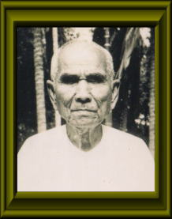
ピンおじいちゃん 実の孫以上に、私をかわいがって下さいました。 とても心の温かい方でした。 『これからの時代は、男も女もない時代になるん だよ。』と、素晴らしい言葉を贈ってくれました。 この世におじいちゃんにめぐり合えたことは、 私にとって大変幸運なことです。 |
|
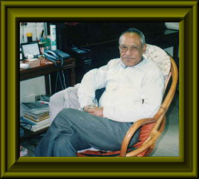
くつろぐカーヌおじさん 芸術家であり、哲学者でもあるカーヌおじさん。 両親の次に、私が最も尊敬している人物の 一人です。 母のたった一人の血を分けた 弟に当たります。 しかし残念ながら、２００２年４月１日に、 アメリカの自宅にて永眠致しました。 ご冥福をお祈り致します。 |
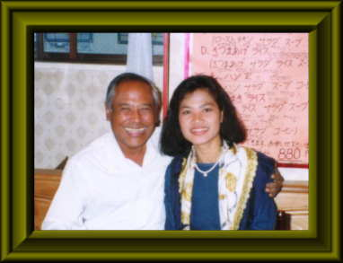
カーヌおじさんと私 兄が経営する「アンコル・トム」（町田） カンボジアレストランにて |
|
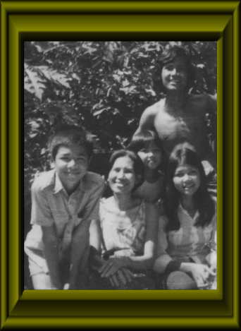
プノンペンの自宅の庭にて 前列左からトー兄さん、母、私、オーク姉さん後右はタル兄さん |
前列左 次男トー兄さん内戦中、私に焼き野ねずみを差し入れてれたり、夜遅くまで一緒に畦作りをした。
とても平和主義的な性格です。 「色のない空」－明らかになる差別－ 前列中左 母 どんな時にも､子どもには 笑顔を絶やさない母。 前列右 次女のオーク姉さん 色白でえくぼがあって、ロングヘア、 スポーツ万能の１７才。 内戦が始まって数ヵ月後、あっけなく この世を去りました。 息を引き取る前､「日本に留学中の セタリン姉さんが迎えに来るの．．．」 との言葉を残して．．．。 「色のない空」－オーク姉さんの死－ 後列右 タル兄さん 戦時中、高熱を出して仕事を休んだ私に 「へびのスープ」を差し入れてくれた やさしい長兄のタル兄さん。 今頃どこにどうしていますか。 |
|
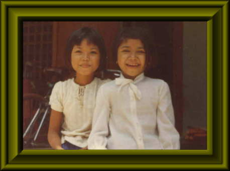
自宅の前で、妹のナエット（右）と
１９７５年４月、内戦の約一週間前にカーヌ叔父さんが
撮影し、日本に持ち出してくれた写真。
妹とは２つ違いですが、よく近所の方に「どっちが お姉ちゃん？」と言われます。 それに､「ケンカする程仲が良いね。」とも言われます。 全く何の罪もない妹も、殺されました。 「色のない空」－そして母たちが・・・－ |
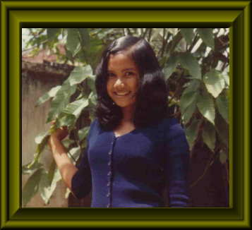
三女のマオ姉さん
この写真は､中学三年生くらいと思われます。
典型的なカンボジア美人です。 強制労働で体を痛め、「仕事が出来なく なったから」との理由だけで殺されました。 「色のない空」－そして母たちが・・・－ |
|
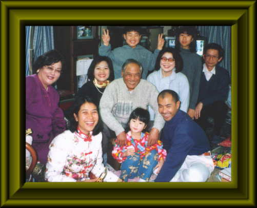
生前のカーヌおじさんを囲んで |
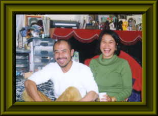
トラ兄さんとセタリン姉さん
カンボジアレストラン「アンコル・トム」オーナーであるトラ兄さん。（左）
『私は水玉のシマウマ』（講談社）『アンコール・ワットの青い空の下で』（てらいんく）の著者であるセタリン姉さん。 （右）他人には優しく、妹である私にはとても厳しい２人です。 |
|
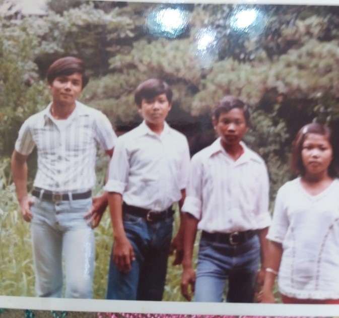
1980年夏、都内にて来日直後のきょうだい4人 右から、ポンナレット、ボラ君、トラ兄さん、トレス兄さん。夢と希望と不安でいっぱいのため笑顔のゆとりがありませんでした。 |
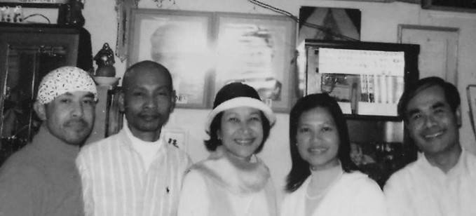
兄弟5人が揃った、とても貴重な写真
右から、トレス兄さん、ポンナレット、セタリン姉さん、ボラ君、トラ兄さん。
（右）他人には優しく、妹である私にはとても厳しい２人です。 |

スター家族対抗歌合戦
今から２０年前『スター家族対抗歌合戦』に
きょうだい４人揃って招待されました。
左から、トー兄さん、トラ兄さん、私、セタリン姉さん。 右のお二人は司会者です。 |